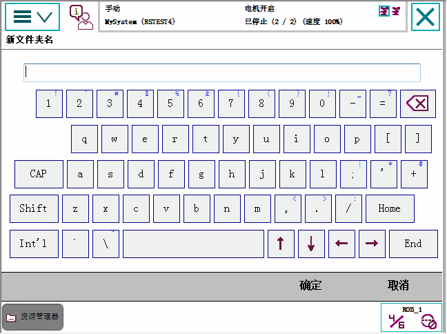

| 浏览和处理 FlexPendant - 基本步骤 | ||
| 使用软键盘 | ||
| 软键盘 | 在操作系统（例如输入文件名或参数值）时，会经常使用软键盘。 软件盘和普通键盘一样，也可以输入插入点，键入字符或更正键入错误。点击字母、数字和特殊字符，输入文本或数值。 | ||||||
| 软键盘图示 | 下图是FlexPendant 上的软键盘。  | ||||||
| 使用国际字符 | 所有西文字符均可使用，包括在用户名和密码中。要访问国际字符，请点击软键盘上的 Int’l 键（右上方），删除插入点左边的字符。 | ||||||
| 更改插入点 | 点击箭头键更改插入点，例如在更正输入错误时。
| ||||||
| 删除 |
|